| View Manual: Heatmiser Boilerman user manualHeatmiser Boilerman user manual PDF | View Manual: Heatmiser Boilerman installation manualHeatmiser Boilerman installation manual PDF | Heatmiser Boilerman | Boiler-room sequence controller (discontinued) | | |
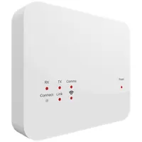 | View Manual: Heatmiser Boost user manualHeatmiser Boost user manual PDF | View Manual: Heatmiser Boost installation manualHeatmiser Boost installation manual PDF | Heatmiser Boost | Wireless repeater (RF and neo mesh) | | |
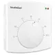 | View Wiring Diagram: Heatmiser DS1Heatmiser DS1 Wiring Diagram PDF | View Wiring Diagram: Heatmiser DS1Heatmiser DS1 Wiring Diagram PDF | Heatmiser DS1 | Dial room thermostat, first version (discontinued) | | |
| Request manual | | Heatmiser DS1 V2 | Dial room thermostat (current) | | |
| View Manual: Heatmiser DS1-Basic user manualHeatmiser DS1-Basic user manual PDF | View Manual: Heatmiser DS1-Basic installation manualHeatmiser DS1-Basic installation manual PDF | Heatmiser DS1-Basic | Dial room thermostat | | |
| View Wiring Diagram: Heatmiser DS1-EHeatmiser DS1-E Wiring Diagram PDF | View Wiring Diagram: Heatmiser DS1-EHeatmiser DS1-E Wiring Diagram PDF | Heatmiser DS1-E | Dial electric floor heating thermostat (discontinued) | | |
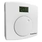 | View Wiring Diagram: Heatmiser DS1-ELHeatmiser DS1-EL Wiring Diagram PDF | View Wiring Diagram: Heatmiser DS1-ELHeatmiser DS1-EL Wiring Diagram PDF | Heatmiser DS1-EL | Dial electric floor heating thermostat with LCD (discontinued) | | |
| View Wiring Diagram: Heatmiser DS1-LHeatmiser DS1-L Wiring Diagram PDF | View Wiring Diagram: Heatmiser DS1-LHeatmiser DS1-L Wiring Diagram PDF | Heatmiser DS1-L | Dial room thermostat with LCD, first version (discontinued) | | |
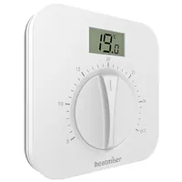 | View Manual: Heatmiser DS1-L V2 user manualHeatmiser DS1-L V2 user manual PDF | View Manual: Heatmiser DS1-L V2 installation manualHeatmiser DS1-L V2 installation manual PDF | Heatmiser DS1-L V2 | Dial room thermostat with LCD (current) | | |
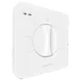 | View Wiring Diagram: Heatmiser DS-SB PublicHeatmiser DS-SB Public Wiring Diagram PDF | View Wiring Diagram: Heatmiser DS-SB PublicHeatmiser DS-SB Public Wiring Diagram PDF | Heatmiser DS-SB Public | Tamper-proof dial thermostat with setback (discontinued) | | |
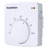 | View Installation & User: Heatmiser DS-SB V1Heatmiser DS-SB V1 Installation & User manual PDF | View Installation & User: Heatmiser DS-SB V1Heatmiser DS-SB V1 Installation & User manual PDF | Heatmiser DS-SB V1 | Dial thermostat with setback, first version (discontinued) | | |
| View Wiring Diagram: Heatmiser DS-SB V2Heatmiser DS-SB V2 Wiring Diagram PDF | View Wiring Diagram: Heatmiser DS-SB V2Heatmiser DS-SB V2 Wiring Diagram PDF | Heatmiser DS-SB V2 | Dial thermostat with setback (discontinued) | | |
| View Manual: Heatmiser DS-SB V3 user manualHeatmiser DS-SB V3 user manual PDF | View Manual: Heatmiser DS-SB V3 installation manualHeatmiser DS-SB V3 installation manual PDF | Heatmiser DS-SB V3 | Dial thermostat with setback (current) | | |
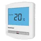 | View Manual: Heatmiser DT / DT-N user manualHeatmiser DT / DT-N user manual PDF | View Manual: Heatmiser DT / DT-N installation manualHeatmiser DT / DT-N installation manual PDF | Heatmiser DT / DT-N | Digital room thermostat (discontinued) | | |
| View Manual: Heatmiser DT-B user manualHeatmiser DT-B user manual PDF | View Manual: Heatmiser DT-B installation manualHeatmiser DT-B installation manual PDF | Heatmiser DT-B | Battery digital room thermostat (discontinued) | | |
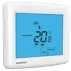 | View Manual: Heatmiser DT-ETS / DT-ENTS user manualHeatmiser DT-ETS / DT-ENTS user manual PDF | View Manual: Heatmiser DT-ETS / DT-ENTS installation manualHeatmiser DT-ETS / DT-ENTS installation manual PDF | Heatmiser DT-ETS / DT-ENTS | Touchscreen electric floor heating thermostat (discontinued) | | |
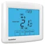 | View Manual: Heatmiser DT-ETS WiFi user manualHeatmiser DT-ETS WiFi user manual PDF | View Manual: Heatmiser DT-ETS WiFi installation manualHeatmiser DT-ETS WiFi installation manual PDF | Heatmiser DT-ETS WiFi | WiFi touchscreen electric floor heating thermostat (discontinued) | | |
| View Manual: Heatmiser DT-ETS WiFi RF user manualHeatmiser DT-ETS WiFi RF user manual PDF | View Manual: Heatmiser DT-ETS WiFi RF installation manualHeatmiser DT-ETS WiFi RF installation manual PDF | Heatmiser DT-ETS WiFi RF | WiFi touchscreen electric floor heating thermostat with wireless receiver (discontinued) | | |
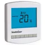 | View Manual: Heatmiser DT-EW user manualHeatmiser DT-EW user manual PDF | View Manual: Heatmiser DT-EW installation manualHeatmiser DT-EW installation manual PDF | Heatmiser DT-EW | Wireless battery electric floor heating thermostat (discontinued) | | |
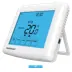 | View Manual: Heatmiser DT-EWTS user manualHeatmiser DT-EWTS user manual PDF | View Manual: Heatmiser DT-EWTS installation manualHeatmiser DT-EWTS installation manual PDF | Heatmiser DT-EWTS | Wireless touchscreen electric floor heating thermostat, pairs with RC2 (discontinued) | | |
| View Manual: Heatmiser DT-RP user manualHeatmiser DT-RP user manual PDF | View Manual: Heatmiser DT-RP installation manualHeatmiser DT-RP installation manual PDF | Heatmiser DT-RP | Digital thermostat with remote probe (discontinued) | | |
| View Manual: Heatmiser DT-TS / DT-NTS user manualHeatmiser DT-TS / DT-NTS user manual PDF | View Manual: Heatmiser DT-TS / DT-NTS installation manualHeatmiser DT-TS / DT-NTS installation manual PDF | Heatmiser DT-TS / DT-NTS | Touchscreen digital room thermostat (discontinued) | | |
| View Manual: Heatmiser DT-TS WiFi user manualHeatmiser DT-TS WiFi user manual PDF | View Manual: Heatmiser DT-TS WiFi installation manualHeatmiser DT-TS WiFi installation manual PDF | Heatmiser DT-TS WiFi | WiFi touchscreen digital thermostat (discontinued) | | |
| View Manual: Heatmiser DT-TS WiFi RF user manualHeatmiser DT-TS WiFi RF user manual PDF | View Manual: Heatmiser DT-TS WiFi RF installation manualHeatmiser DT-TS WiFi RF installation manual PDF | Heatmiser DT-TS WiFi RF | WiFi touchscreen digital thermostat with wireless receiver (discontinued) | | |
| View Manual: Heatmiser DT-UWTS user manualHeatmiser DT-UWTS user manual PDF | View Manual: Heatmiser DT-UWTS installation manualHeatmiser DT-UWTS installation manual PDF | Heatmiser DT-UWTS | Wireless touchscreen digital thermostat, pairs with UH1-W (discontinued) | | |
| View Manual: Heatmiser DT-W user manualHeatmiser DT-W user manual PDF | View Manual: Heatmiser DT-W installation manualHeatmiser DT-W installation manual PDF | Heatmiser DT-W | Wireless battery digital thermostat (discontinued) | | |
| View Manual: Heatmiser DT-WTS user manualHeatmiser DT-WTS user manual PDF | View Manual: Heatmiser DT-WTS installation manualHeatmiser DT-WTS installation manual PDF | Heatmiser DT-WTS | Wireless touchscreen digital thermostat, pairs with RC1 (discontinued) | | |
| View Manual: Heatmiser Eclipse (new version) user manualHeatmiser Eclipse (new version) user manual PDF | View Manual: Heatmiser Eclipse (new version) installation manualHeatmiser Eclipse (new version) installation manual PDF | Heatmiser Eclipse (new version) | Commercial heating controller (discontinued) | | |
| View Manual: Heatmiser Eclipse (old version) user manualHeatmiser Eclipse (old version) user manual PDF | View Manual: Heatmiser Eclipse (old version) installation manualHeatmiser Eclipse (old version) installation manual PDF | Heatmiser Eclipse (old version) | Commercial heating controller (discontinued) | | |
| View Manual: Heatmiser Economy 2000 / 2000L user manualHeatmiser Economy 2000 / 2000L user manual PDF | View Manual: Heatmiser Economy 2000 / 2000L installation manualHeatmiser Economy 2000 / 2000L installation manual PDF | Heatmiser Economy 2000 / 2000L | Commercial heating controller (discontinued) | | |
| View Manual: Heatmiser Economy (new version) user manualHeatmiser Economy (new version) user manual PDF | View Manual: Heatmiser Economy (new version) installation manualHeatmiser Economy (new version) installation manual PDF | Heatmiser Economy (new version) | Commercial heating controller (discontinued) | | |
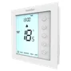 | View Manual: Heatmiser Edge user manualHeatmiser Edge user manual PDF | View Manual: Heatmiser Edge installation manualHeatmiser Edge installation manual PDF | Heatmiser Edge | Programmable room thermostat for radiators and wet underfloor heating | | |
| View Manual: Heatmiser Edge-E user manualHeatmiser Edge-E user manual PDF | View Manual: Heatmiser Edge-E installation manualHeatmiser Edge-E installation manual PDF | Heatmiser Edge-E | Programmable electric floor heating thermostat | | |
| View Manual: Heatmiser Edge-HC user manualHeatmiser Edge-HC user manual PDF | View Manual: Heatmiser Edge-HC installation manualHeatmiser Edge-HC installation manual PDF | Heatmiser Edge-HC | Heat/cool fan coil thermostat | | |
| View Manual: Heatmiser Edge-HC Modbus user manualHeatmiser Edge-HC Modbus user manual PDF | View Manual: Heatmiser Edge-HC Modbus installation manualHeatmiser Edge-HC Modbus installation manual PDF | Heatmiser Edge-HC Modbus | Heat/cool fan coil thermostat with Modbus | | |
| View User Instructions: Heatmiser IQHeatmiser IQ User Instructions PDF | View User Instructions: Heatmiser IQHeatmiser IQ User Instructions PDF | Heatmiser IQ | Commercial heating controller (discontinued) | | |
| View Manual: Heatmiser IQ+ user manualHeatmiser IQ+ user manual PDF | View Manual: Heatmiser IQ+ installation manualHeatmiser IQ+ installation manual PDF | Heatmiser IQ+ | Commercial heating controller (discontinued) | | |
| View Manual: Heatmiser Mistral 1 / 2 user manualHeatmiser Mistral 1 / 2 user manual PDF | View Manual: Heatmiser Mistral 1 / 2 installation manualHeatmiser Mistral 1 / 2 installation manual PDF | Heatmiser Mistral 1 / 2 | Commercial heating controller (discontinued) | | |
| View Manual: Heatmiser Mistral (old version) user manualHeatmiser Mistral (old version) user manual PDF | View Manual: Heatmiser Mistral (old version) installation manualHeatmiser Mistral (old version) installation manual PDF | Heatmiser Mistral (old version) | Commercial heating controller (discontinued) | | |
| View Manual: Heatmiser Multi-Link user manualHeatmiser Multi-Link user manual PDF | View Manual: Heatmiser Multi-Link installation manualHeatmiser Multi-Link installation manual PDF | Heatmiser Multi-Link | Multi-site network link for Heatmiser thermostats (discontinued) | | |
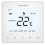 | View Manual: Heatmiser neoAir V1 user manualHeatmiser neoAir V1 user manual PDF | View Manual: Heatmiser neoAir V1 installation manualHeatmiser neoAir V1 installation manual PDF | Heatmiser neoAir V1 | Wireless battery smart thermostat, first version (discontinued) | | |
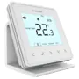 | View Manual: Heatmiser neoAir V2 user manualHeatmiser neoAir V2 user manual PDF | View Manual: Heatmiser neoAir V2 installation manualHeatmiser neoAir V2 installation manual PDF | Heatmiser neoAir V2 | Wireless battery smart thermostat (discontinued) | | |
| View Manual: Heatmiser neoAir V2-M user manualHeatmiser neoAir V2-M user manual PDF | View Manual: Heatmiser neoAir V2-M installation manualHeatmiser neoAir V2-M installation manual PDF | Heatmiser neoAir V2-M | Wireless battery smart thermostat (discontinued) | | |
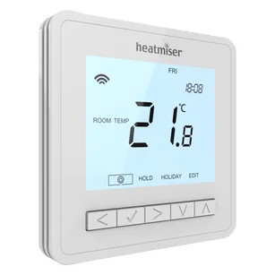 | View Manual: Heatmiser neoAir V3 user manualHeatmiser neoAir V3 user manual PDF | View Manual: Heatmiser neoAir V3 installation manualHeatmiser neoAir V3 installation manual PDF | Heatmiser neoAir V3 | Wireless battery smart thermostat and time clock (current) | | |
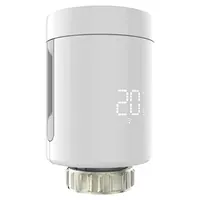 | View Manual: Heatmiser neoFlo user manualHeatmiser neoFlo user manual PDF | View Manual: Heatmiser neoFlo installation manualHeatmiser neoFlo installation manual PDF | Heatmiser neoFlo | Smart thermostatic radiator head (current) | | |
| Request manual | | Heatmiser neoHub (1st generation) | Original smart hub for the neo system (discontinued) | | |
| View Manual: Heatmiser neoHub G2 user manualHeatmiser neoHub G2 user manual PDF | View Manual: Heatmiser neoHub G2 installation manualHeatmiser neoHub G2 installation manual PDF | Heatmiser neoHub G2 | Smart hub (2nd generation, Apple HomeKit) | | |
| View Manual: Heatmiser neoHub G3 user manualHeatmiser neoHub G3 user manual PDF | View Manual: Heatmiser neoHub G3 installation manualHeatmiser neoHub G3 installation manual PDF | Heatmiser neoHub G3 | Smart hub (3rd generation) for the neo system (current) | | |
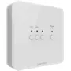 | View Manual: Heatmiser neoHub Mini HW user manualHeatmiser neoHub Mini HW user manual PDF | View Manual: Heatmiser neoHub Mini HW installation manualHeatmiser neoHub Mini HW installation manual PDF | Heatmiser neoHub Mini HW | WiFi hub and receiver for heating and hot water | | |
| View Manual: Heatmiser neoHub Mini OT user manualHeatmiser neoHub Mini OT user manual PDF | View Manual: Heatmiser neoHub Mini OT installation manualHeatmiser neoHub Mini OT installation manual PDF | Heatmiser neoHub Mini OT | OpenTherm WiFi hub and boiler receiver | | |
| Request manual | | Heatmiser neoPlug | Smart plug and wireless repeater for the neo system | | |
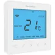 | View Manual: Heatmiser neoStat 12V V1 user manualHeatmiser neoStat 12V V1 user manual PDF | View Manual: Heatmiser neoStat 12V V1 installation manualHeatmiser neoStat 12V V1 installation manual PDF | Heatmiser neoStat 12V V1 | Smart 12V thermostat, first version (discontinued) | | |
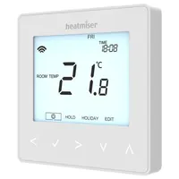 | View Manual: Heatmiser neoStat 12V V2 user manualHeatmiser neoStat 12V V2 user manual PDF | View Manual: Heatmiser neoStat 12V V2 installation manualHeatmiser neoStat 12V V2 installation manual PDF | Heatmiser neoStat 12V V2 | Smart 12V thermostat for UH8-N/UH1 wiring centres | | |
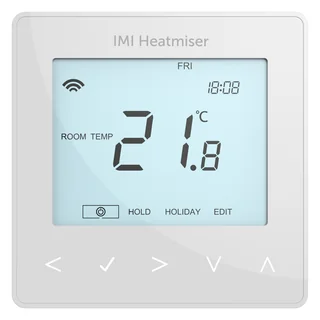 | View Manual: Heatmiser neoStat 12V V3 user manualHeatmiser neoStat 12V V3 user manual PDF | View Manual: Heatmiser neoStat 12V V3 installation manualHeatmiser neoStat 12V V3 installation manual PDF | Heatmiser neoStat 12V V3 | Smart 12V thermostat for UH8-N/UH1 wiring centres (current) | | |
| View Manual: Heatmiser neoStat Pro user manualHeatmiser neoStat Pro user manual PDF | View Manual: Heatmiser neoStat Pro installation manualHeatmiser neoStat Pro installation manual PDF | Heatmiser neoStat Pro | Smart thermostat with show-through display (current) | | |
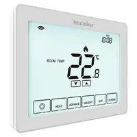 | View Manual: Heatmiser neoStat Touch / Touch Carbon user manualHeatmiser neoStat Touch / Touch Carbon user manual PDF | View Manual: Heatmiser neoStat Touch / Touch Carbon installation manualHeatmiser neoStat Touch / Touch Carbon installation manual PDF | Heatmiser neoStat Touch / Touch Carbon | Smart touchscreen thermostat (current) | | |
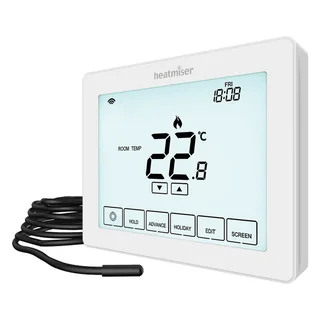 | View Manual: Heatmiser neoStat Touch-e / Touch-e Carbon user manualHeatmiser neoStat Touch-e / Touch-e Carbon user manual PDF | View Manual: Heatmiser neoStat Touch-e / Touch-e Carbon installation manualHeatmiser neoStat Touch-e / Touch-e Carbon installation manual PDF | Heatmiser neoStat Touch-e / Touch-e Carbon | Smart touchscreen electric floor heating thermostat (current) | | |
| View Manual: Heatmiser neoStat V1 user manualHeatmiser neoStat V1 user manual PDF | View Manual: Heatmiser neoStat V1 installation manualHeatmiser neoStat V1 installation manual PDF | Heatmiser neoStat V1 | Smart thermostat, first version (blue backlight, discontinued) | | |
| View Manual: Heatmiser neoStat V2 user manualHeatmiser neoStat V2 user manual PDF | View Manual: Heatmiser neoStat V2 installation manualHeatmiser neoStat V2 installation manual PDF | Heatmiser neoStat V2 | Smart thermostat, neo range (white backlight) | | |
| View Manual: Heatmiser neoStat V3 user manualHeatmiser neoStat V3 user manual PDF | View Manual: Heatmiser neoStat V3 installation manualHeatmiser neoStat V3 installation manual PDF | Heatmiser neoStat V3 | Smart thermostat, neo range (current) | | |
| View Manual: Heatmiser neoStat WiFi user manualHeatmiser neoStat WiFi user manual PDF | View Manual: Heatmiser neoStat WiFi installation manualHeatmiser neoStat WiFi installation manual PDF | Heatmiser neoStat WiFi | Smart thermostat with built-in WiFi (no neoHub needed) | | |
| View Manual: Heatmiser neoStat-e V1 user manualHeatmiser neoStat-e V1 user manual PDF | View Manual: Heatmiser neoStat-e V1 installation manualHeatmiser neoStat-e V1 installation manual PDF | Heatmiser neoStat-e V1 | Smart electric floor heating thermostat, first version (discontinued) | | |
| View Manual: Heatmiser neoStat-e V2 user manualHeatmiser neoStat-e V2 user manual PDF | View Manual: Heatmiser neoStat-e V2 installation manualHeatmiser neoStat-e V2 installation manual PDF | Heatmiser neoStat-e V2 | Smart electric floor heating thermostat, neo range | | |
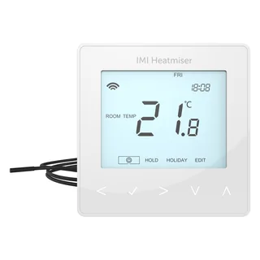 | View Manual: Heatmiser neoStat-e V3 user manualHeatmiser neoStat-e V3 user manual PDF | View Manual: Heatmiser neoStat-e V3 installation manualHeatmiser neoStat-e V3 installation manual PDF | Heatmiser neoStat-e V3 | Smart electric floor heating thermostat, neo range (current) | | |
| View Manual: Heatmiser neoStat-e WiFi Carbon user manualHeatmiser neoStat-e WiFi Carbon user manual PDF | View Manual: Heatmiser neoStat-e WiFi Carbon installation manualHeatmiser neoStat-e WiFi Carbon installation manual PDF | Heatmiser neoStat-e WiFi Carbon | Smart WiFi electric floor heating thermostat, carbon black | | |
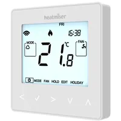 | View Manual: Heatmiser neoStat-HC user manualHeatmiser neoStat-HC user manual PDF | View Manual: Heatmiser neoStat-HC installation manualHeatmiser neoStat-HC installation manual PDF | Heatmiser neoStat-HC | Smart heat/cool fan coil thermostat | | |
| View Manual: Heatmiser neoStat-HC1 user manualHeatmiser neoStat-HC1 user manual PDF | View Manual: Heatmiser neoStat-HC1 installation manualHeatmiser neoStat-HC1 installation manual PDF | Heatmiser neoStat-HC1 | Smart heat/cool fan coil thermostat | | |
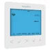 | View Manual: Heatmiser neoStat-hw V1 user manualHeatmiser neoStat-hw V1 user manual PDF | View Manual: Heatmiser neoStat-hw V1 installation manualHeatmiser neoStat-hw V1 installation manual PDF | Heatmiser neoStat-hw V1 | Smart hot water time clock, first version (discontinued) | | |
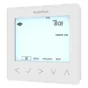 | View Manual: Heatmiser neoStat-hw V2 user manualHeatmiser neoStat-hw V2 user manual PDF | View Manual: Heatmiser neoStat-hw V2 installation manualHeatmiser neoStat-hw V2 installation manual PDF | Heatmiser neoStat-hw V2 | Smart time clock for hot water, neo range | | |
| View Manual: Heatmiser neoStat-hw V3 user manualHeatmiser neoStat-hw V3 user manual PDF | View Manual: Heatmiser neoStat-hw V3 installation manualHeatmiser neoStat-hw V3 installation manual PDF | Heatmiser neoStat-hw V3 | Smart time clock for hot water, neo range (current) | | |
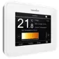 | View Manual: Heatmiser neoUltra user manualHeatmiser neoUltra user manual PDF | View Manual: Heatmiser neoUltra installation manualHeatmiser neoUltra installation manual PDF | Heatmiser neoUltra | Smart colour touchscreen thermostat (discontinued) | | |
| View User Instructions: Heatmiser Netmonitor V2Heatmiser Netmonitor V2 User Instructions PDF | View Manual: Heatmiser Netmonitor V2 installation manualHeatmiser Netmonitor V2 installation manual PDF | Heatmiser Netmonitor V2 | Network interface for Heatmiser thermostats (discontinued) | | |
| View User Instructions: Heatmiser Netmonitor V3Heatmiser Netmonitor V3 User Instructions PDF | View Manual: Heatmiser Netmonitor V3 installation manualHeatmiser Netmonitor V3 installation manual PDF | Heatmiser Netmonitor V3 | Network interface for Heatmiser thermostats (discontinued) | | |
| View User Instructions: Heatmiser Plus (new version)Heatmiser Plus (new version) User Instructions PDF | View Manual: Heatmiser Plus (new version) installation manualHeatmiser Plus (new version) installation manual PDF | Heatmiser Plus (new version) | Commercial heating controller (discontinued) | | |
| View User Instructions: Heatmiser Plus (old version)Heatmiser Plus (old version) User Instructions PDF | View User Instructions: Heatmiser Plus (old version)Heatmiser Plus (old version) User Instructions PDF | Heatmiser Plus (old version) | Commercial heating controller (discontinued) | | |
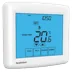 | View Manual: Heatmiser PRT2-TS / PRT2-NTS user manualHeatmiser PRT2-TS / PRT2-NTS user manual PDF | View Manual: Heatmiser PRT2-TS / PRT2-NTS installation manualHeatmiser PRT2-TS / PRT2-NTS installation manual PDF | Heatmiser PRT2-TS / PRT2-NTS | Two-zone touchscreen programmable thermostat (discontinued) | | |
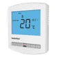 | View Manual: Heatmiser PRT / PRT-N user manualHeatmiser PRT / PRT-N user manual PDF | View Manual: Heatmiser PRT / PRT-N installation manualHeatmiser PRT / PRT-N installation manual PDF | Heatmiser PRT / PRT-N | Programmable room thermostat (discontinued) | | |
| View Manual: Heatmiser PRT-B user manualHeatmiser PRT-B user manual PDF | View Manual: Heatmiser PRT-B installation manualHeatmiser PRT-B installation manual PDF | Heatmiser PRT-B | Battery programmable thermostat (discontinued) | | |
| View Manual: Heatmiser PRT-E user manualHeatmiser PRT-E user manual PDF | View Manual: Heatmiser PRT-E installation manualHeatmiser PRT-E installation manual PDF | Heatmiser PRT-E | Programmable electric floor heating thermostat (discontinued) | | |
| View Manual: Heatmiser PRT-EN user manualHeatmiser PRT-EN user manual PDF | View Manual: Heatmiser PRT-EN installation manualHeatmiser PRT-EN installation manual PDF | Heatmiser PRT-EN | Programmable electric floor heating thermostat (discontinued) | | |
| View Manual: Heatmiser PRT-ETS / PRT-ENTS user manualHeatmiser PRT-ETS / PRT-ENTS user manual PDF | View Manual: Heatmiser PRT-ETS / PRT-ENTS installation manualHeatmiser PRT-ETS / PRT-ENTS installation manual PDF | Heatmiser PRT-ETS / PRT-ENTS | Touchscreen electric floor heating thermostat (discontinued) | | |
| View User Instructions: Heatmiser PRT-ETS WiFiHeatmiser PRT-ETS WiFi User Instructions PDF | View User Instructions: Heatmiser PRT-ETS WiFiHeatmiser PRT-ETS WiFi User Instructions PDF | Heatmiser PRT-ETS WiFi | WiFi touchscreen electric floor heating thermostat (discontinued) | | |
| View Manual: Heatmiser PRT-ETS WiFi RF user manualHeatmiser PRT-ETS WiFi RF user manual PDF | View Manual: Heatmiser PRT-ETS WiFi RF installation manualHeatmiser PRT-ETS WiFi RF installation manual PDF | Heatmiser PRT-ETS WiFi RF | WiFi touchscreen electric floor heating thermostat with wireless receiver (discontinued) | | |
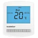 | View Manual: Heatmiser PRT-EW user manualHeatmiser PRT-EW user manual PDF | View Manual: Heatmiser PRT-EW installation manualHeatmiser PRT-EW installation manual PDF | Heatmiser PRT-EW | Wireless battery programmable electric floor heating thermostat (discontinued) | | |
| View Manual: Heatmiser PRT-EWTS user manualHeatmiser PRT-EWTS user manual PDF | View Manual: Heatmiser PRT-EWTS installation manualHeatmiser PRT-EWTS installation manual PDF | Heatmiser PRT-EWTS | Wireless touchscreen electric floor heating thermostat, pairs with RC2 (discontinued) | | |
| View User Instructions: Heatmiser PRT-R2Heatmiser PRT-R2 User Instructions PDF | View User Instructions: Heatmiser PRT-R2Heatmiser PRT-R2 User Instructions PDF | Heatmiser PRT-R2 | Programmable room thermostat (discontinued) | | |
| View Manual: Heatmiser PRT-RP user manualHeatmiser PRT-RP user manual PDF | View Manual: Heatmiser PRT-RP installation manualHeatmiser PRT-RP installation manual PDF | Heatmiser PRT-RP | Programmable thermostat with remote probe (discontinued) | | |
| View Manual: Heatmiser PRT-RPTS user manualHeatmiser PRT-RPTS user manual PDF | View Manual: Heatmiser PRT-RPTS installation manualHeatmiser PRT-RPTS installation manual PDF | Heatmiser PRT-RPTS | Touchscreen programmable thermostat with remote probe (discontinued) | | |
| View Manual: Heatmiser PRT-TS / PRT-NTS user manualHeatmiser PRT-TS / PRT-NTS user manual PDF | View Manual: Heatmiser PRT-TS / PRT-NTS installation manualHeatmiser PRT-TS / PRT-NTS installation manual PDF | Heatmiser PRT-TS / PRT-NTS | Touchscreen programmable thermostat (discontinued) | | |
| View Manual: Heatmiser PRT-TS WiFi user manualHeatmiser PRT-TS WiFi user manual PDF | View Manual: Heatmiser PRT-TS WiFi installation manualHeatmiser PRT-TS WiFi installation manual PDF | Heatmiser PRT-TS WiFi | WiFi touchscreen programmable thermostat (discontinued) | | |
| View Manual: Heatmiser PRT-TS WiFi RF user manualHeatmiser PRT-TS WiFi RF user manual PDF | View Manual: Heatmiser PRT-TS WiFi RF installation manualHeatmiser PRT-TS WiFi RF installation manual PDF | Heatmiser PRT-TS WiFi RF | WiFi touchscreen thermostat with wireless receiver (discontinued) | | |
| View Manual: Heatmiser PRT-UWTS user manualHeatmiser PRT-UWTS user manual PDF | View Manual: Heatmiser PRT-UWTS installation manualHeatmiser PRT-UWTS installation manual PDF | Heatmiser PRT-UWTS | Wireless touchscreen programmable thermostat, pairs with UH1-W (discontinued) | | |
| View Manual: Heatmiser PRT-W user manualHeatmiser PRT-W user manual PDF | View Manual: Heatmiser PRT-W installation manualHeatmiser PRT-W installation manual PDF | Heatmiser PRT-W | Wireless battery programmable thermostat (discontinued) | | |
| View Manual: Heatmiser PRT-WTS user manualHeatmiser PRT-WTS user manual PDF | View Manual: Heatmiser PRT-WTS installation manualHeatmiser PRT-WTS installation manual PDF | Heatmiser PRT-WTS | Wireless touchscreen programmable thermostat, pairs with RC1 (discontinued) | | |
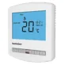 | View Manual: Heatmiser PRT/HW / PRT/HW-N user manualHeatmiser PRT/HW / PRT/HW-N user manual PDF | View Manual: Heatmiser PRT/HW / PRT/HW-N installation manualHeatmiser PRT/HW / PRT/HW-N installation manual PDF | Heatmiser PRT/HW / PRT/HW-N | Programmable thermostat with hot water timer (discontinued) | | |
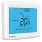 | View Manual: Heatmiser PRT/HW-TS / PRT/HW-NTS user manualHeatmiser PRT/HW-TS / PRT/HW-NTS user manual PDF | View Manual: Heatmiser PRT/HW-TS / PRT/HW-NTS installation manualHeatmiser PRT/HW-TS / PRT/HW-NTS installation manual PDF | Heatmiser PRT/HW-TS / PRT/HW-NTS | Touchscreen programmable thermostat with hot water timer (discontinued) | | |
| View User Instructions: Heatmiser PRT/HW-TS WiFiHeatmiser PRT/HW-TS WiFi User Instructions PDF | View User Instructions: Heatmiser PRT/HW-TS WiFiHeatmiser PRT/HW-TS WiFi User Instructions PDF | Heatmiser PRT/HW-TS WiFi | WiFi touchscreen thermostat with hot water timer (discontinued) | | |
| View Manual: Heatmiser PRT/HW-TS WiFi RF user manualHeatmiser PRT/HW-TS WiFi RF user manual PDF | View Manual: Heatmiser PRT/HW-TS WiFi RF installation manualHeatmiser PRT/HW-TS WiFi RF installation manual PDF | Heatmiser PRT/HW-TS WiFi RF | WiFi touchscreen thermostat with hot water timer and wireless receiver (discontinued) | | |
| View Manual: Heatmiser PRTHW-UWTS user manualHeatmiser PRTHW-UWTS user manual PDF | View Manual: Heatmiser PRTHW-UWTS installation manualHeatmiser PRTHW-UWTS installation manual PDF | Heatmiser PRTHW-UWTS | Wireless touchscreen thermostat with hot water timer, pairs with UH1-W (discontinued) | | |
| View Manual: Heatmiser PRTHW-W user manualHeatmiser PRTHW-W user manual PDF | View Manual: Heatmiser PRTHW-W installation manualHeatmiser PRTHW-W installation manual PDF | Heatmiser PRTHW-W | Wireless programmable thermostat with hot water timer (discontinued) | | |
| View Manual: Heatmiser PRTHW-WTS user manualHeatmiser PRTHW-WTS user manual PDF | View Manual: Heatmiser PRTHW-WTS installation manualHeatmiser PRTHW-WTS installation manual PDF | Heatmiser PRTHW-WTS | Wireless touchscreen thermostat with hot water timer, pairs with RC1 (discontinued) | | |
| View User Instructions: Heatmiser PumpminderHeatmiser Pumpminder User Instructions PDF | View User Instructions: Heatmiser PumpminderHeatmiser Pumpminder User Instructions PDF | Heatmiser Pumpminder | Pump changeover controller (discontinued) | | |
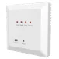 | View Manual: Heatmiser RC1-W user manualHeatmiser RC1-W user manual PDF | View Manual: Heatmiser RC1-W installation manualHeatmiser RC1-W installation manual PDF | Heatmiser RC1-W | Wireless receiver (discontinued) | | |
| View Manual: Heatmiser RC1-WTS user manualHeatmiser RC1-WTS user manual PDF | View Manual: Heatmiser RC1-WTS installation manualHeatmiser RC1-WTS installation manual PDF | Heatmiser RC1-WTS | Wireless receiver for WTS thermostats (discontinued) | | |
| View Manual: Heatmiser RC2-W user manualHeatmiser RC2-W user manual PDF | View Manual: Heatmiser RC2-W installation manualHeatmiser RC2-W installation manual PDF | Heatmiser RC2-W | Wireless electric floor heating receiver (discontinued) | | |
| View Manual: Heatmiser RC2-WTS user manualHeatmiser RC2-WTS user manual PDF | View Manual: Heatmiser RC2-WTS installation manualHeatmiser RC2-WTS installation manual PDF | Heatmiser RC2-WTS | Wireless electric floor heating receiver for WTS thermostats (discontinued) | | |
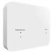 | View Manual: Heatmiser RF Switch 16A user manualHeatmiser RF Switch 16A user manual PDF | View Manual: Heatmiser RF Switch 16A installation manualHeatmiser RF Switch 16A installation manual PDF | Heatmiser RF Switch 16A | 16A wireless receiver | | |
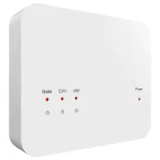 | View Manual: Heatmiser RF Switch (V1) user manualHeatmiser RF Switch (V1) user manual PDF | View Manual: Heatmiser RF Switch (V1) installation manualHeatmiser RF Switch (V1) installation manual PDF | Heatmiser RF Switch (V1) | Wireless receiver, first version (discontinued) | | |
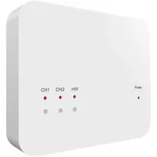 | View Manual: Heatmiser RF Switch V2 user manualHeatmiser RF Switch V2 user manual PDF | View Manual: Heatmiser RF Switch V2 installation manualHeatmiser RF Switch V2 installation manual PDF | Heatmiser RF Switch V2 | Wireless receiver / boiler switch | | |
| View User Instructions: Heatmiser Senior (new version)Heatmiser Senior (new version) User Instructions PDF | View Manual: Heatmiser Senior (new version) installation manualHeatmiser Senior (new version) installation manual PDF | Heatmiser Senior (new version) | Commercial heating controller (discontinued) | | |
| View Manual: Heatmiser Senior (old version) user manualHeatmiser Senior (old version) user manual PDF | View Manual: Heatmiser Senior (old version) installation manualHeatmiser Senior (old version) installation manual PDF | Heatmiser Senior (old version) | Commercial heating controller (discontinued) | | |
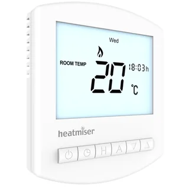 | View Manual: Heatmiser Slimline V2 user manualHeatmiser Slimline V2 user manual PDF | View Manual: Heatmiser Slimline V2 installation manualHeatmiser Slimline V2 installation manual PDF | Heatmiser Slimline V2 | Programmable room thermostat (discontinued) | | |
| View Manual: Heatmiser Slimline V3 user manualHeatmiser Slimline V3 user manual PDF | View Manual: Heatmiser Slimline V3 installation manualHeatmiser Slimline V3 installation manual PDF | Heatmiser Slimline V3 | Programmable room thermostat (discontinued) | | |
| View Manual: Heatmiser Slimline V4 user manualHeatmiser Slimline V4 user manual PDF | View Manual: Heatmiser Slimline V4 installation manualHeatmiser Slimline V4 installation manual PDF | Heatmiser Slimline V4 | Programmable room thermostat (current) | | |
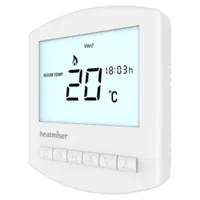 | View Manual: Heatmiser Slimline-B user manualHeatmiser Slimline-B user manual PDF | View Manual: Heatmiser Slimline-B installation manualHeatmiser Slimline-B installation manual PDF | Heatmiser Slimline-B | Battery programmable thermostat | | |
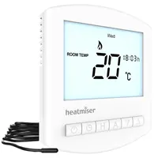 | View Manual: Heatmiser Slimline-E V2 user manualHeatmiser Slimline-E V2 user manual PDF | View Manual: Heatmiser Slimline-E V2 installation manualHeatmiser Slimline-E V2 installation manual PDF | Heatmiser Slimline-E V2 | Programmable electric floor heating thermostat (discontinued) | | |
| View Manual: Heatmiser Slimline-E V3 user manualHeatmiser Slimline-E V3 user manual PDF | View Manual: Heatmiser Slimline-E V3 installation manualHeatmiser Slimline-E V3 installation manual PDF | Heatmiser Slimline-E V3 | Programmable electric floor heating thermostat (current) | | |
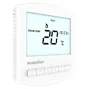 | View Manual: Heatmiser Slimline-HWN user manualHeatmiser Slimline-HWN user manual PDF | View Manual: Heatmiser Slimline-HWN installation manualHeatmiser Slimline-HWN installation manual PDF | Heatmiser Slimline-HWN | 12V programmable thermostat with hot water timer (discontinued) | | |
| View Manual: Heatmiser Slimline-N user manualHeatmiser Slimline-N user manual PDF | View Manual: Heatmiser Slimline-N installation manualHeatmiser Slimline-N installation manual PDF | Heatmiser Slimline-N | 12V programmable thermostat for UH8-N/UH1 wiring centres (discontinued) | | |
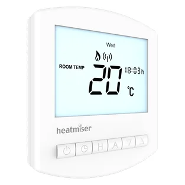 | View Manual: Heatmiser Slimline-RF (earlier version) user manualHeatmiser Slimline-RF (earlier version) user manual PDF | View Manual: Heatmiser Slimline-RF (earlier version) installation manualHeatmiser Slimline-RF (earlier version) installation manual PDF | Heatmiser Slimline-RF (earlier version) | Wireless battery programmable thermostat (discontinued) | | |
| View Manual: Heatmiser Slimline-RF V2 user manualHeatmiser Slimline-RF V2 user manual PDF | View Manual: Heatmiser Slimline-RF V2 installation manualHeatmiser Slimline-RF V2 installation manual PDF | Heatmiser Slimline-RF V2 | Wireless battery programmable thermostat (discontinued) | | |
| View Manual: Heatmiser Slimline-RF V3 user manualHeatmiser Slimline-RF V3 user manual PDF | View Manual: Heatmiser Slimline-RF V3 installation manualHeatmiser Slimline-RF V3 installation manual PDF | Heatmiser Slimline-RF V3 | Wireless battery programmable thermostat (current) | | |
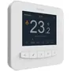 | View Manual: Heatmiser SmartStat user manualHeatmiser SmartStat user manual PDF | View Manual: Heatmiser SmartStat installation manualHeatmiser SmartStat installation manual PDF | Heatmiser SmartStat | WiFi colour touchscreen thermostat (discontinued) | | |
| View Manual: Heatmiser TM1 / TM1-N user manualHeatmiser TM1 / TM1-N user manual PDF | View Manual: Heatmiser TM1 / TM1-N installation manualHeatmiser TM1 / TM1-N installation manual PDF | Heatmiser TM1 / TM1-N | Digital time clock (discontinued) | | |
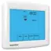 | View Manual: Heatmiser TM1-TS WiFi user manualHeatmiser TM1-TS WiFi user manual PDF | View Manual: Heatmiser TM1-TS WiFi installation manualHeatmiser TM1-TS WiFi installation manual PDF | Heatmiser TM1-TS WiFi | WiFi touchscreen time clock (discontinued) | | |
| View Manual: Heatmiser TM1-TS WiFi RF user manualHeatmiser TM1-TS WiFi RF user manual PDF | View Manual: Heatmiser TM1-TS WiFi RF installation manualHeatmiser TM1-TS WiFi RF installation manual PDF | Heatmiser TM1-TS WiFi RF | WiFi touchscreen time clock with wireless receiver (discontinued) | | |
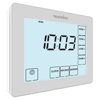 | View Manual: Heatmiser TM4 V2 user manualHeatmiser TM4 V2 user manual PDF | View Manual: Heatmiser TM4 V2 installation manualHeatmiser TM4 V2 installation manual PDF | Heatmiser TM4 V2 | Four-channel touchscreen time clock | | |
| View Manual: Heatmiser TM4-TS user manualHeatmiser TM4-TS user manual PDF | View Manual: Heatmiser TM4-TS installation manualHeatmiser TM4-TS installation manual PDF | Heatmiser TM4-TS | Four-channel touchscreen time clock (discontinued) | | |
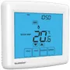 | View Manual: Heatmiser Touch (V1) user manualHeatmiser Touch (V1) user manual PDF | View Manual: Heatmiser Touch (V1) installation manualHeatmiser Touch (V1) installation manual PDF | Heatmiser Touch (V1) | Touchscreen programmable thermostat, blue backlight (discontinued) | | |
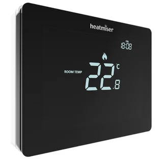 | View Manual: Heatmiser Touch Carbon user manualHeatmiser Touch Carbon user manual PDF | View Manual: Heatmiser Touch Carbon installation manualHeatmiser Touch Carbon installation manual PDF | Heatmiser Touch Carbon | Touchscreen programmable thermostat, black | | |
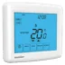 | View Manual: Heatmiser Touch Duo user manualHeatmiser Touch Duo user manual PDF | View Manual: Heatmiser Touch Duo installation manualHeatmiser Touch Duo installation manual PDF | Heatmiser Touch Duo | Two-zone touchscreen thermostat (discontinued) | | |
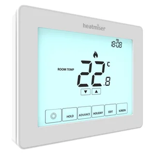 | View Manual: Heatmiser Touch V2 user manualHeatmiser Touch V2 user manual PDF | View Manual: Heatmiser Touch V2 installation manualHeatmiser Touch V2 installation manual PDF | Heatmiser Touch V2 | Touchscreen programmable thermostat | | |
| View Manual: Heatmiser Touch-E (V1) user manualHeatmiser Touch-E (V1) user manual PDF | View Manual: Heatmiser Touch-E (V1) installation manualHeatmiser Touch-E (V1) installation manual PDF | Heatmiser Touch-E (V1) | Touchscreen electric floor heating thermostat, blue backlight (discontinued) | | |
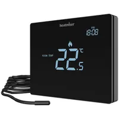 | View Manual: Heatmiser Touch-E Carbon user manualHeatmiser Touch-E Carbon user manual PDF | View Manual: Heatmiser Touch-E Carbon installation manualHeatmiser Touch-E Carbon installation manual PDF | Heatmiser Touch-E Carbon | Touchscreen electric floor heating thermostat, black | | |
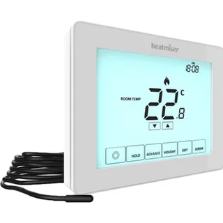 | View Manual: Heatmiser Touch-E V2 user manualHeatmiser Touch-E V2 user manual PDF | View Manual: Heatmiser Touch-E V2 installation manualHeatmiser Touch-E V2 installation manual PDF | Heatmiser Touch-E V2 | Touchscreen electric floor heating thermostat | | |
| View Manual: Heatmiser Touch-N user manualHeatmiser Touch-N user manual PDF | View Manual: Heatmiser Touch-N installation manualHeatmiser Touch-N installation manual PDF | Heatmiser Touch-N | 12V touchscreen thermostat for UH8-N/UH1 wiring centres (discontinued) | | |
| View Manual: Heatmiser Touch-RF user manualHeatmiser Touch-RF user manual PDF | View Manual: Heatmiser Touch-RF installation manualHeatmiser Touch-RF installation manual PDF | Heatmiser Touch-RF | Wireless touchscreen thermostat (discontinued) | | |
| View User Instructions: Heatmiser TouchPad (TFT)Heatmiser TouchPad (TFT) User Instructions PDF | View User Instructions: Heatmiser TouchPad (TFT)Heatmiser TouchPad (TFT) User Instructions PDF | Heatmiser TouchPad (TFT) | Central colour touchscreen controller (discontinued) | | |
| View Manual: Heatmiser TouchPad V2 user manualHeatmiser TouchPad V2 user manual PDF | View Manual: Heatmiser TouchPad V2 installation manualHeatmiser TouchPad V2 installation manual PDF | Heatmiser TouchPad V2 | Central touchscreen controller (discontinued) | | |
| View User Instructions: Heatmiser TouchPad V3Heatmiser TouchPad V3 User Instructions PDF | View User Instructions: Heatmiser TouchPad V3Heatmiser TouchPad V3 User Instructions PDF | Heatmiser TouchPad V3 | Central touchscreen controller (discontinued) | | |
| View Wiring Diagram: Heatmiser UH1Heatmiser UH1 Wiring Diagram PDF | View Wiring Diagram: Heatmiser UH1Heatmiser UH1 Wiring Diagram PDF | Heatmiser UH1 | Wiring centre (discontinued) | | |
| View Wiring Diagram: Heatmiser UH1-WHeatmiser UH1-W Wiring Diagram PDF | View Wiring Diagram: Heatmiser UH1-WHeatmiser UH1-W Wiring Diagram PDF | Heatmiser UH1-W | Wireless wiring centre (discontinued) | | |
| View Wiring Diagram: Heatmiser UH2Heatmiser UH2 Wiring Diagram PDF | View Wiring Diagram: Heatmiser UH2Heatmiser UH2 Wiring Diagram PDF | Heatmiser UH2 | Wiring centre (discontinued) | | |
| View Wiring Diagram: Heatmiser UH3Heatmiser UH3 Wiring Diagram PDF | View Wiring Diagram: Heatmiser UH3Heatmiser UH3 Wiring Diagram PDF | Heatmiser UH3 | Wiring centre (discontinued) | | |
| View Installation: Heatmiser UH4Heatmiser UH4 Installation manual PDF | View Installation: Heatmiser UH4Heatmiser UH4 Installation manual PDF | Heatmiser UH4 | 4-zone underfloor heating wiring centre | | |
| View Installation: Heatmiser UH6Heatmiser UH6 Installation manual PDF | View Installation: Heatmiser UH6Heatmiser UH6 Installation manual PDF | Heatmiser UH6 | 6-zone compact wiring centre | | |
| View Installation: Heatmiser UH8Heatmiser UH8 Installation manual PDF | View Installation: Heatmiser UH8Heatmiser UH8 Installation manual PDF | Heatmiser UH8 | 8-zone 230V wiring centre | | |
| View Installation: Heatmiser UH8-NHeatmiser UH8-N Installation manual PDF | View Installation: Heatmiser UH8-NHeatmiser UH8-N Installation manual PDF | Heatmiser UH8-N | 8-zone 12V wiring centre | | |
| View Installation: Heatmiser UH8-RFHeatmiser UH8-RF Installation manual PDF | View Installation: Heatmiser UH8-RFHeatmiser UH8-RF Installation manual PDF | Heatmiser UH8-RF | 8-zone wireless wiring centre, first version (discontinued) | | |
| View Installation: Heatmiser UH8-RF MiniHeatmiser UH8-RF Mini Installation manual PDF | View Installation: Heatmiser UH8-RF MiniHeatmiser UH8-RF Mini Installation manual PDF | Heatmiser UH8-RF Mini | 8-zone wireless wiring centre (current) | | |
| View Installation: Heatmiser UH8-RF V2Heatmiser UH8-RF V2 Installation manual PDF | View Installation: Heatmiser UH8-RF V2Heatmiser UH8-RF V2 Installation manual PDF | Heatmiser UH8-RF V2 | 8-zone wireless wiring centre | | |
| View Manual: Heatmiser Wireless Air Sensor user manualHeatmiser Wireless Air Sensor user manual PDF | View Manual: Heatmiser Wireless Air Sensor installation manualHeatmiser Wireless Air Sensor installation manual PDF | Heatmiser Wireless Air Sensor | Wireless room air sensor for Edge/Touch thermostats | | |
| View Manual: Heatmiser Wireless Window/Door Contact Sensor user manualHeatmiser Wireless Window/Door Contact Sensor user manual PDF | View Manual: Heatmiser Wireless Window/Door Contact Sensor installation manualHeatmiser Wireless Window/Door Contact Sensor installation manual PDF | Heatmiser Wireless Window/Door Contact Sensor | Wireless window/door sensor for Edge/Touch thermostats | | |